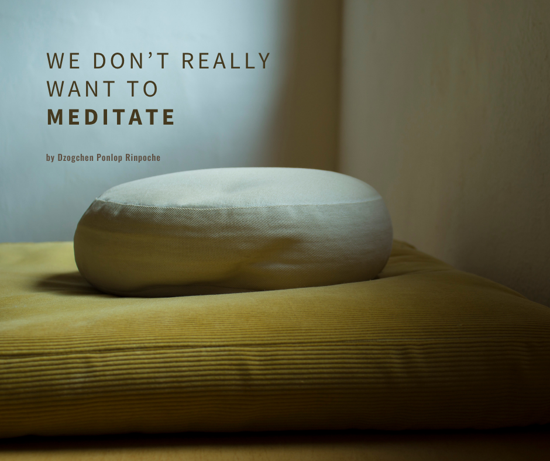
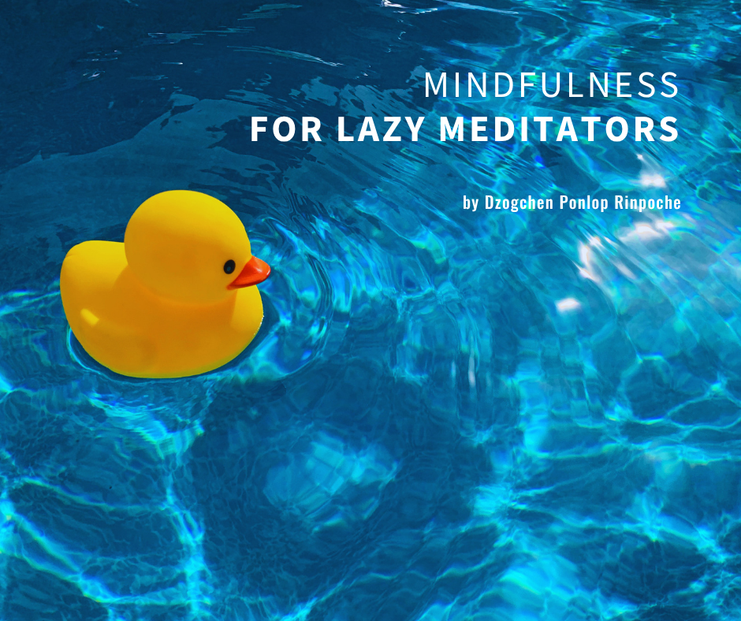
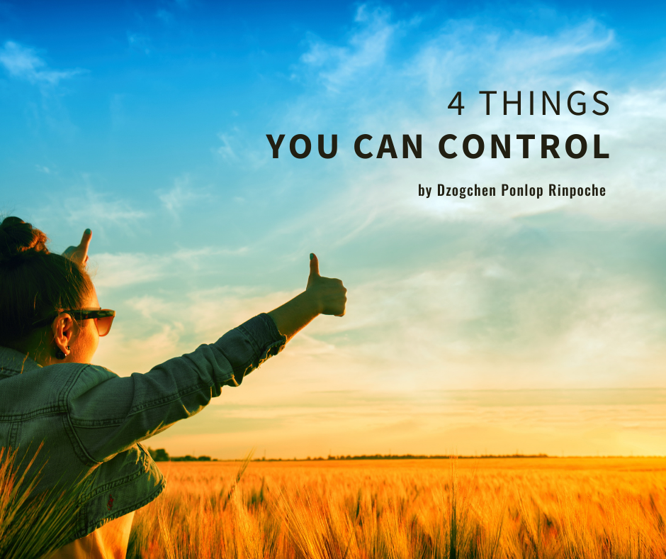

Teachings
How-To
How to Practice Vipashyana, Analytical Meditation
When you practice Vipashyana, or analytical meditation, what are you going to analyze? You could meditate on… Read More →
How to Practice Shamatha, Calm Abiding Meditation
Shamatha meditation is a beautiful practice of paying attention. It is the development of mindfulness, in… Read More →
What Is Meditation?
It’s interesting: in Tibetan, the word “meditation” is described with the word for “becoming acquainted,” or… Read More →
5 Ways to Develop a Healthy, Happy Mind
Would you agree that you and I each have a mind? So far, I haven’t met anyone who says they don’t have a… Read More →
Articles

We Don’t Really Want to Meditate
If we’re honest with ourselves, we don’t want to meditate, do we? Do you meditate every day? Maybe a few… Read More →

Mindfulness for Lazy Meditators
Meditation starts with taking a centered, upright, comfortable posture. When you sit down to meditate,… Read More →

4 Things You Can Control
There’s so much happening around the world, and so much happening in each of our lives. I think we have this… Read More →
What Is Most Important to You Now?
There are so many things we need in our life. So many things we want, so many things to learn. There’s so… Read More →
What Gets Your Attention?
All Dharma, all of the Buddha’s teachings, lead to one thing: their root, which is your mind. It’s beautiful.… Read More →
Start With Questions
What we call Dharma, the teachings of the Buddha, sounds very extensive, very complicated, and sometimes… Read More →
Don’t Make It a Big Deal
Throughout time, again and again, all of us human beings have faced challenges. On one hand, these issues are… Read More →
The Buddha’s Teaching in 4 Lines
Not committing any misdeeds whatsoever / Practicing virtue in abundance / Taming one’s mind completely / This… Read More →